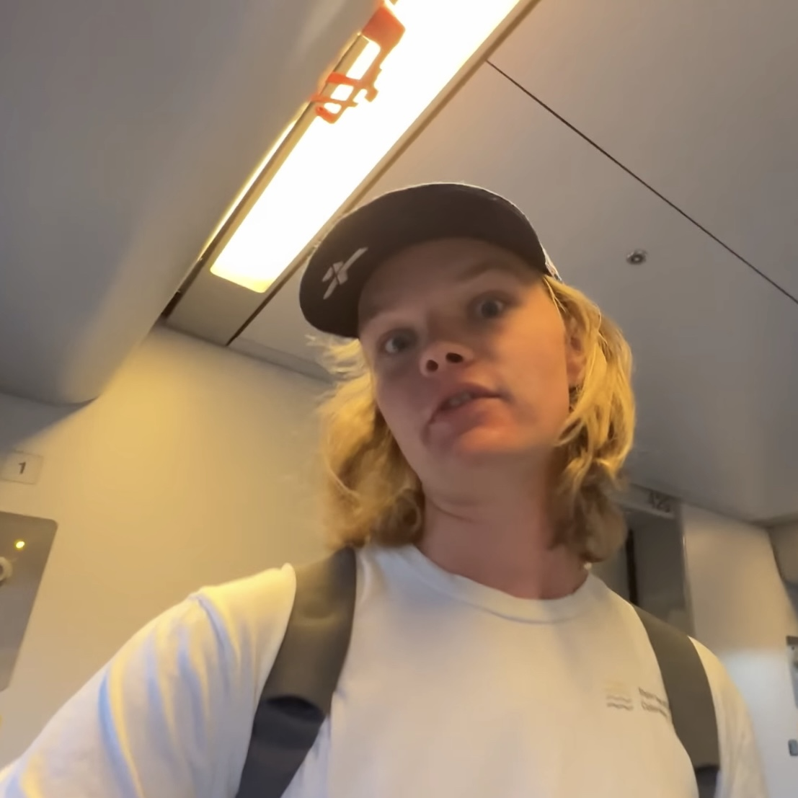

Sam Denby
bron: youtube.com
Een held van mij is Sam Denby. Hij is een Youtuber die twee verschillende soort filmpjes maak: educatieve filmpjes en de spel show "Jetlag: The game". Ik vind de educatieve filmpjes leuk, maar de spel show jetlag vind ik leuker. De show gaat over twee teams die een opdracht moeten doen die te maken heeft met reizen (vandaar de naam jetlag). De Show heeft 4 seizoenen, het leukste seizoen vond ik seizoen 3. In seizoen 3 was het een soort tikkertje, maar dan heel groot. De teams hadden een locatie waar ze aan het einde van de 3 dagen naar toe moesten. Er was de hele tijd een iemand de "loper" en een iemand de tikker en als je getikt was wisselde je van rol. Het waren locaties in west-Europa zodat je er met de trein naar toe kon. Dit vond ik het leuken eraan, omdat je dan goed moet plannen welke het snelste is, maar ook rekening moet houden met de tikker die natuurlijk ervan uitgaat dat jij de snelste trein neemt. Deze dynamiek is heel leuk. De andere presenatoren vind ik zelf ook heel leuk. De educatieve Filmpjes worden wat vaker gepubliceerd, daarom kijk ik die ook graag de onderwerpen zijn vaak heel interessant.